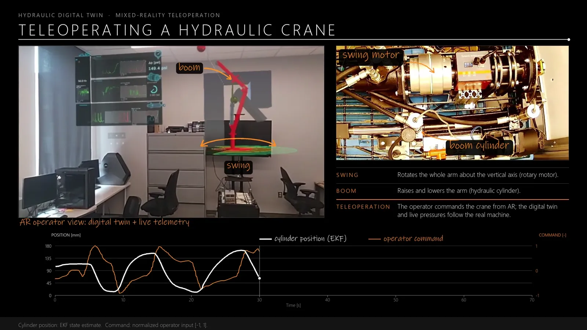
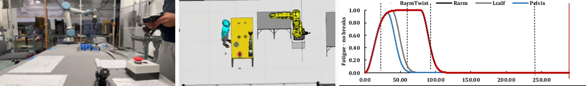
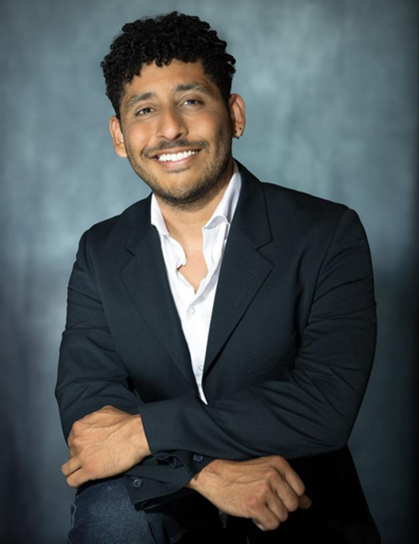

A plant model that matches the bench.
A 4-state Python model of the Parker cylinder bench, validated against MATLAB/Simulink, with friction characterized using Stribeck and LuGre models.
4states, validated against Simulink

From the governing physics to the operator's headset. I build every layer, and make them work together.
Lumped-parameter, CFD and SPH models validated against real benches.
Extended Kalman Filters and friction models running in real time.
DAQ, Raspberry Pi, Modbus, TCP/IP and Firebase pipelines.
Web dashboards and mixed-reality teleoperation in Unity.
A real test bench and its twin, synchronized live, from the plant model to a HoloLens.
A 4-state Python model of the Parker cylinder bench, validated against MATLAB/Simulink, with friction characterized using Stribeck and LuGre models.

An Extended Kalman Filter estimates cylinder states in real time on a Raspberry Pi, next to the hardware it is watching.
DAQ data streams over TCP/IP and Firebase into a web dashboard that also drives the EHA and pump VFD and runs scripted experiments.
In a HoloLens 2, the operator sees the twin over the real crane, with live telemetry and the estimated cylinder position.
A physical UR5 workcell and its Visual Components twin, driven by the same task description online. Robot trajectories are logged against a human fatigue model, so each cycle is judged on throughput and ergonomics together.

GPU-accelerated Smoothed Particle Hydrodynamics of the internal flow in a hydraulic spool valve, compared with experiments and mesh CFD across 2–8 mm spool strokes. A view of behavior no installed sensor can measure.
Simulation, real-time physics, robotics and the software that ships it.
GPU particle simulation of internal valve flow, validated against experiments and CFD.
Solver output you can walk around and read in the room.
Neo-Hookean soft bodies a twin can run live.
Hybrid EKF and machine learning, the proof of concept for the hydraulic platform.
Inverse kinematics fused with path planning for a robotic crane.
Robots, conveyors and AGVs connected to immersive interfaces.
A lab DAQ and control dashboard plus offline-first PWAs I use daily.
CFD results of the internal flow in a hydraulic relief valve (Ansys CFX), rebuilt in Unity as an interactive mixed-reality scene, with custom shaders for color, lighting and texture and scripts that animate the solution through its time steps.
Why it matters: solver output you can walk around and read in the room, exposing internal velocity and pressure that no installed sensor can measure.
Soft-body and deformable-body simulation built on Extended Position-Based Dynamics with energy-derived, neo-Hookean constraints, implemented in C++ and OpenGL compute shaders and in Unity.
Why it matters: the real-time counterpart to offline CFD and SPH, fast and stable enough for a twin to run live.
A teleoperation-ready twin built on a hybrid estimator (EKF, LuGre friction and Bayesian regression) that predicts actuator motion from measured signals only, with real-time proportional control from a HoloLens and an open dataset.
Why it matters: the proof of concept that scaled into the hydraulic crane platform. Under revision at Engineering Science and Technology, an International Journal.
A FABRIK inverse-kinematics solver fused with RRT* path planning in Unity for collision-free control of a robotic crane.
Why it matters: the same IK now turns a hand gesture in mixed reality into joint targets for the physical crane.

I'm Marvin Durango-Cogollo, a mechanical engineer from Cartagena, Colombia, with a Ph.D. in Engineering Technology from Purdue. My work connects physical modeling, experimental validation and the software that puts both in front of people.
My doctoral research focuses on digital twins for hydraulic machinery. In industry, I worked on human–robot collaboration at Hitachi America's Industrial Innovation Laboratory.
The formal record behind the projects above — full version available as a PDF.
I build the full Digital Twin stack and make it pay off: physics models at the right fidelity (CFD down to real-time), estimation that replaces sensors, industrial connectivity and edge computing, robotics and discrete-event simulation (Visual Components, NVIDIA Isaac Sim), and VR/XR interfaces that let people see and operate the machine, written in Python and C++. I prefer the simplest model that answers the question, and I prove it against measured data.
Peer-reviewed and presented work grounding the projects above in validated research.
Durango-Cogollo, M., Garcia-Bravo, J. M., Newell, B., & Gonzalez-Mancera, A. (2020). CFD Modeling of Hydrocyclones — A Study of Efficiency of Hydrodynamic Reservoirs. Fluids, 5(3), 118.
Durango-Cogollo, M., Garcia, Y., Duncan, S., & Garcia-Bravo, J. M. (2026). A Physics-Informed Hybrid Digital Twin Framework with Mixed Reality Interface for Fluid Power Teleoperation: A Pneumatic Proof-of-Concept. Engineering Science and Technology, an International Journal (JESTECH).
Durango-Cogollo, M., & Garcia-Bravo, J. M. (2026). Smoothed Particle Hydrodynamics for Internal Flow Simulation in Hydraulic Components: Capabilities, Limitations, and Open Challenges. Journal of Hydrodynamics.
Durango, M., Garcia-Bravo, J. M. (2025). Demonstration of a Digital Twin Framework for a Two-Actuator Hydraulic Application. Purdue Polytechnic Graduate Student Poster Symposium.
Durango, M., & Garcia-Bravo, J. M. (2024). Physics-Based Digital Twin for Hydraulic Equipment. DigiTwin Conference.
Durango, M., & Garcia-Bravo, J. M. (2023). SPH as a Model for Hydraulic Components. ASME/BATH Symposium on Fluid Power and Motion Control (FPMC).
Durango, M., Borders, E., Newell, B., Garcia, J., & Breidi, F. (2022). Mixed Reality for Fluid Power Instruction. ASEE Annual Conference & Exposition.
Open to R&D roles in fluid power, simulation and digital twins.